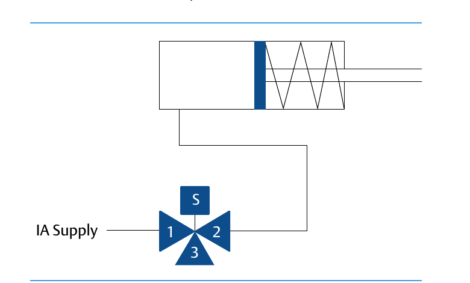
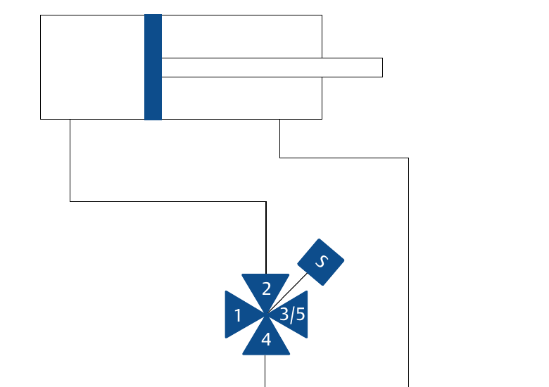

Solenoid Valves: Spring-Return vs. Double-Acting
Spring-Return (Single-Acting)

3-port symbol — drives a single-acting actuator that returns on the spring
Double-Acting

4-port symbol — drives an actuator that needs pressure applied on both sides
After Control Valve Handbook, 6th ed., Figs. 14.14, 14.15 — used directly; cited by the number actually printed on the page. Component Index: cvh-cmp-4.14, cvh-cmp-4.15.